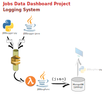

The logging structure will be as described:
- It will be used the Python logging module;
- A message will be put in an AWS SQS FIFO queue with the SQSHandler;
- A service in AWS Lambda will monitor this queue and process the messages;
- The log will be inserted in a collection in MongoDB;
- A Python script will show the log with parameters (data range, origin, last N, level).
Log structure:
{
time: datetime
origin: string identifying the system component that originated this message
message: string
level: string
}
Planned origins and respective INFO level messages:
- GrabberJob initiated.
- Grabbing data from «online job service name».
- Notifying complete grab process for «online job service name» - NNN records retrieved.
- Message sent regarding data from «online job service name».
- GrabberJob end.
- DataAnalyzer started - message received regarding data from «online job service name».
- DataAnalyzer finished - Data from «online job service name» processed.
